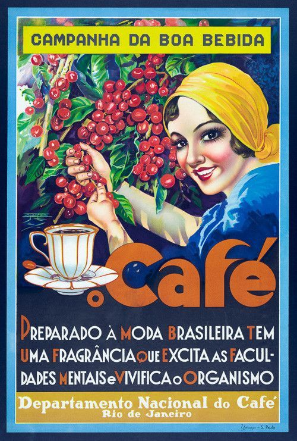

O que foi a Secretaria do Café?
A Secretaria do Café foi um órgão criado pelo governo brasileiro em 1930, durante o governo de Getúlio Vargas, com o objetivo de organizar, fiscalizar e promover a produção e comercialização do café, principal produto de exportação do Brasil na época. Sua sede, o famoso prédio da antiga Bolsa Oficial do Café, está localizada em Santos (SP) e hoje abriga o Museu do Café.
Importância histórica
A Secretaria do Café teve papel fundamental na regulação do mercado cafeeiro, especialmente durante as crises de superprodução e queda de preços. Ela foi responsável por políticas de valorização do café, controle de estoques e incentivo à pesquisa e à modernização das lavouras.
Legado
O legado da Secretaria do Café permanece vivo na memória do setor cafeeiro brasileiro, que ainda hoje é referência mundial em produção e exportação. O prédio histórico em Santos é um símbolo da importância do café para a economia e cultura do Brasil.
O departamento nacional do café era uma autarquia federal, ou seja, um tipo de entidade da administração pública indireta criada por meio de uma lei com a finalidade de executar uma atribuição específica, e era vinculado ao Ministério da Fazenda.
Extinção
O DNC foi extinto em 15 de março de 1946, já no Governo Eurico Dutra, através do Decreto-Lei nº 9 068.[4] O decreto fixou para 30 de junho de 1946 o término do órgão, e iniciar-se-ia desde essa data a liquidação do mesmo. Mais tarde, em 6 de setembro, foi criada a Divisão da Economia Cafeeira (DEC), no âmbito do Ministério da Fazenda, por intermédio do Decreto-Lei nº 9 784. Essa divisão absorveu parte das funções do Departamento Nacional do Café, e a ela passou a competir a direção e a superintendência da política econômica do café.